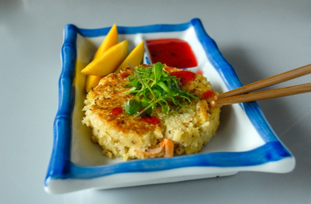

Disse krabbekakene har masse god og balansert smak fra den grønne currypasten. Limeblader, koriander, galangal, sitrongress og hvitløk er alle sammen tilstede og gir umiddelbar reisefeber. En god oppskrift på krabbe!

Ingredienser
4stk fylte krabbeskjell
2 ts grønn currysuppe
2 stk vårløk
1 ss maizena, eller potetmel
2 ss frisk koriander
salt
pepper
olje
1 ss grønn chili
søt chilisaus
Slik gjør du!
Ha kjøttet (både det mørke og lyse) fra krabbeskjellene i en bolle. Bland godt sammen med grønn currypaste, maizena, vårløk og frisk koriander. Smak til med salt og pepper.
Fukt hendene med kaldt vann og form flate kaker av krabberøren med en skje.
Stek de ferdigformede kakene 2-3 minutter på hver side i en smaksnøytral olje, på middels varme.
Servér som snack eller forrett med et dryss frisk koriander, limebåter til å skvise over og en sweet chili saus.